ggplot2 cookbook
- 1 绘图基础(plot basics)
- 2 图层(Layer):几何对象(geoms)
- 3 常见问题总结
1 绘图基础(plot basics)
所有的ggplot2图形都开始于ggplot()函数的调用.给其提供数据,以及美学映射(aesthethic mappings)(使用aes()函数).然后添加图层(layers), 度量系统(scales), 坐标系(coords)以及分面(facets).添加的每个对象,都是在前一行末尾使用符号+.如果需要将一个ggplot2图像保存在本地,使用ggsave()函数.
1.1 ggplot() 创建一个新的ggplot图片
ggplot()函数是用来启动初始化一个ggplot2对象的.It can be used to declare the input data frame for a graphic and to specify the set of plot aesthetics intended to be common throughout all subsequent layers unless specifically overridden.
ggplot(data = NULL, mapping = aes(), ...,
environment = parent.frame())
Arguments1.1.1 参数
data 用于绘图的数据.如果数据格式不是
data.frame,会默认使用fortity()函数转换为data.frame格式.如果在该函数中不提供data,则在后面添加的每一个图层,都需要提供data.mapping 用于美学图层映射的参数.如果在这里不提供,则后面添加的每个图层,都需要提供.
… 其他可用于该函数的参数.
environment 该参数已经淘汰了.
1.1.2 细节
ggplot()用来初始化ggplot2图形对象.经常后面需要通过+来添加其他的对象.一般有三种方法调用该函数:
ggplot(df, aes(x, y, other aesthetics))ggplot(df)ggplot2
如果后面的所有图层使用的都是同一套数据以及美学映射,则推荐使用第一种用法.如果后面图层使用数据一致,但是美学映射不同,则推荐使用第二种方法.如果每一个图层使用的数据和美学映射都不相同,则使用第三种方法,一般用来构建比较复杂的图形.
1.1.3 例子
library(ggplot2)
# 产生随机数据,然后计算平均值和标准差
df <- data.frame(
gp = factor(rep(letters[1:3], each = 10)),
y = rnorm(30)
)
ds <- do.call(rbind, lapply(split(df, df$gp), function(d) {
data.frame(mean = mean(d$y), sd = sd(d$y), gp = d$gp)
}))
ggplot(df, aes(gp, y)) +
geom_point() +
geom_point(data = ds, aes(y = mean), colour = 'red', size = 3)
#注意,第一个geom_point图层使用的是ggplot中的数据和美学映射.而第二个geom_point
#图层中使用的则是不同的数据和美学映射.
# 而下面这幅图,第一个geonm_point图层因为没有提供data,因此使用的是ggplot()中的data,
#而美学映射则是自己定义的.
ggplot(df) +
geom_point(aes(gp, y)) +
geom_point(data = ds, aes(gp, mean), colour = 'red', size = 3)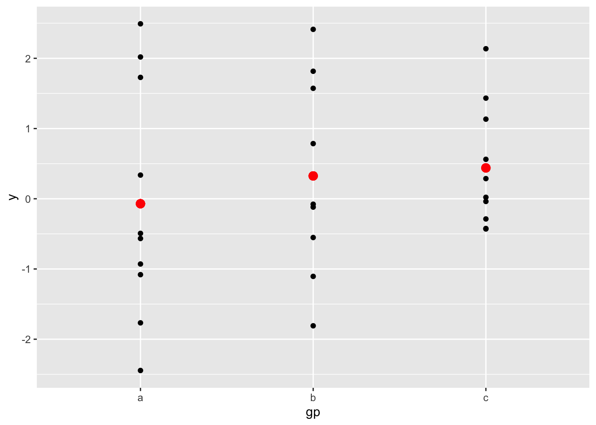
# 另外一个选择则是完全不在ggplot中定义数据和美学映射,而是在每一个图层中分别定义.
# 当你要画复杂图形的时候,这种方法就会显示的非常清晰和明了.
ggplot() +
geom_point(data = df, aes(gp, y)) +
geom_point(data = ds, aes(gp, mean), colour = 'red', size = 3) +
geom_errorbar(
data = ds,
aes(gp, mean, ymin = mean - sd, ymax = mean + sd),
colour = 'red',
width = 0.4
)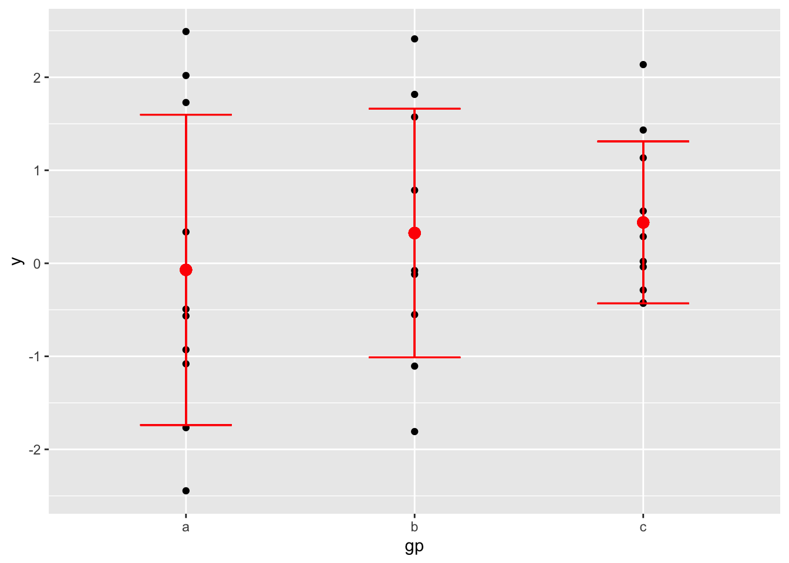
1.2 aes() 创建美学映射
美学映射指的是数据中的变量如何映射到图形的视觉特性上(也就是美学aesthetics).美学映射可以在ggplot()函数以及每一个单独的图层中进行设置.
aes(x, y, ...)
1.2.1 参数
- x, y, … 将变量映射到图形的视觉特性的名字.x和y分别指x轴和y轴.通常他们可以省略不写.但是其他的,如颜色(colour/color),填充颜色(fill),大小(size)等则必须写明参数名字.
1.2.2 细节
注意的是,在ggplot2种,对于视觉特征的名字进行了规范化,因此和R base绘图函数种的并不相同,比如从pch改为shape,从cex改为size.
1.2.3 例子
aes(x = mpg, y = wt)## Aesthetic mapping:
## * `x` -> `mpg`
## * `y` -> `wt`#> Aesthetic mapping:
#> * `x` -> `mpg`
#> * `y` -> `wt`
aes(mpg, wt)## Aesthetic mapping:
## * `x` -> `mpg`
## * `y` -> `wt`#> Aesthetic mapping:
#> * `x` -> `mpg`
#> * `y` -> `wt`
# You can also map aesthetics to functions of variables
aes(x = mpg ^ 2, y = wt / cyl)## Aesthetic mapping:
## * `x` -> `mpg^2`
## * `y` -> `wt/cyl`#> Aesthetic mapping:
#> * `x` -> `mpg^2`
#> * `y` -> `wt/cyl`
# Or to constants
aes(x = 1, colour = "smooth")## Aesthetic mapping:
## * `x` -> 1
## * `colour` -> "smooth"#> Aesthetic mapping:
#> * `x` -> 1
#> * `colour` -> "smooth"
# Aesthetic names are automatically standardised
aes(col = x)## Aesthetic mapping:
## * `colour` -> `x`#> Aesthetic mapping:
#> * `colour` -> `x`
aes(fg = x)## Aesthetic mapping:
## * `colour` -> `x`#> Aesthetic mapping:
#> * `colour` -> `x`
aes(color = x)## Aesthetic mapping:
## * `colour` -> `x`#> Aesthetic mapping:
#> * `colour` -> `x`
aes(colour = x)## Aesthetic mapping:
## * `colour` -> `x`#> Aesthetic mapping:
#> * `colour` -> `x`
# aes() is passed to either ggplot() or specific layer. Aesthetics supplied
# to ggplot() are used as defaults for every layer.
ggplot(mpg, aes(displ, hwy)) + geom_point()
ggplot(mpg) + geom_point(aes(displ, hwy))
# Tidy evaluation ----------------------------------------------------
# aes() automatically quotes all its arguments, so you need to use tidy
# evaluation to create wrappers around ggplot2 pipelines. The
# simplest case occurs when your wrapper takes dots:
scatter_by <- function(data, ...) {
ggplot(data) + geom_point(aes(...))
}
scatter_by(mtcars, disp, drat)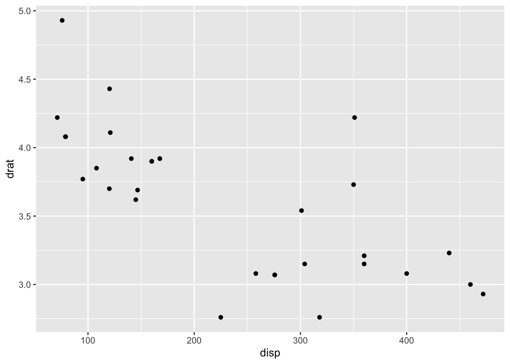
# If your wrapper has a more specific interface with named arguments,
# you need "enquote and unquote":
scatter_by <- function(data, x, y) {
x <- enquo(x)
y <- enquo(y)
ggplot(data) + geom_point(aes(!!x, !!y))
}
scatter_by(mtcars, disp, drat)
# Note that users of your wrapper can use their own functions in the
# quoted expressions and all will resolve as it should!
cut3 <- function(x) cut_number(x, 3)
scatter_by(mtcars, cut3(disp), drat)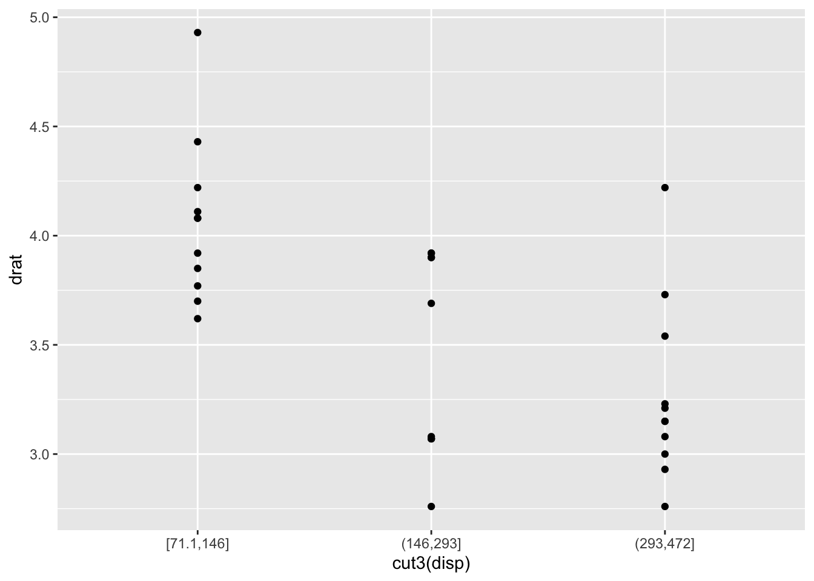
1.3 ggsave()保存ggplot2图片对象
ggsave()默认会保存当前最后一幅ggplot2图片.如果不设置尺寸,则使用当前设备尺寸.
ggsave(filename, plot = last_plot(), device = NULL, path = NULL,
scale = 1, width = NA, height = NA, units = c("in", "cm", "mm"),
dpi = 300, limitsize = TRUE, ...)1.3.1 参数
filename 要保存的图片的名字,注意不包括后缀名.
plot 要保存的
ggplot2图片.device 要保存的图片的类型.包括以下:“eps”, “ps”, “tex” (pictex), “pdf”, “jpeg”, “tiff”, “png”, “bmp”, “svg” or “wmf” (windows only).
path 图片所要保存的路径.
scale Multiplicative scaling factor.暂时不知道什么意思?
width, height, units 要保存图片的宽和高,以及其单位.单位包括:“in”(英寸), “cm”, or “mm”.
dpi 图片分辨率.一般是数字.也可以使用文字符:“retina” (320), “print” (300), or “screen” (72).
limitsize 如果设置为TRUE,则
ggsave不会保存尺寸大于50×50 inch的图片.… 其他可以用于图形设备(graphics device function)的参数.
2 图层(Layer):几何对象(geoms)
一个图层包括了数据(data),美学映射(aesthetic mapping),几何对象(geometric object),统计转换(statistical transformation),以及位置调整(position adjustment).一般来说,应该使用geom_xxx()函数来创建图层.必要情况下,需要手动设置去覆盖默认的位置和统计转换.
2.1 直线geom_abline,geom_hline和geom_vline
这三个函数(几何对象)分别用来画对角线,水平和垂直直线.
geom_abline(mapping = NULL, data = NULL, ..., slope, intercept,
na.rm = FALSE, show.legend = NA)
geom_hline(mapping = NULL, data = NULL, ..., yintercept,
na.rm = FALSE, show.legend = NA)
geom_vline(mapping = NULL, data = NULL, ..., xintercept,
na.rm = FALSE, show.legend = NA)2.1.1 参数
mapping 美学映射,使用
aes()函数设置.data 用于创建该图层的数据.有三种选择: 1)如果设置为
NULL,也是默认设置.则该数据继承自ggplot()函数中的数据.2)一个data.frame,或者其他的对象,如tibble,这将会覆盖ggplot()中的数据.3)也可以是一个function(),但是该function最后返回的对象应该是data.frame.function可以使用formula格式进行创建,如:head(.x, 10)… 其他的可以传入
layer()的参数.一般是美学对象,如colour = "red"或者size = 3.也可以是一些一些能够传入到和geom_配对的geom/stat的参数.na.rm 默认为
FALSE, missing value会被去除掉,但是会给出warning,如果设置为TRUE,missing value也会被去除掉,但是不会给warning.show.legend 该图层是否要显示在legend上.默认为
NA,则该图层中所有的映射到图形属性的变量都会显示在legend中.FALSE则永远不显示,TRUE则永远显示.如果该图形有多个变量映射到不同的图形属性,则可以将其设置为一个vector,分别控制不同的变量是否显示.xintercept/yintercept/slope/intercept 控制直线的位置参数.如果这些设置了,则
data,mapping和show.legend则会被覆盖掉.
2.1.2 细节
这些几何对象和其他的几何对象稍微有些不同.可以通过两种方法提供参数:1)给layer函数提供参数,或者2)通过美学对象提供参数.如果你使用参数,例如geom_abline(intercept = 0, slope = 1),然后几何对象(geom_)会创建一个新的data frame,这个data rame只包括了你所提供的数据.这意味着在所有的分面中,直线都是相同的.如果你想在不同的分面中,直线不相同,你需要自己创建一个data frame,然后再美学映射(aesthetics)中设置.
与其他的几何对象不同,这些几何对象不会从ggplot中继承data.他们也不会影响到x和y的scale.
2.1.3 美学映射(Aesthetics)
这三个几何对象(geom)其实都是使用geom_line()函数来画直线的,因此他们都支持geom_line()的美学参数,如alpha,colour,linetype和size.对于每个几何对象都有,都有单独的参数用来控制直线的位置:
geom_vline:xintercept.geom_hline:yintercept.geom_vline:slope(斜率)和intercept(截距).
2.1.4 例子
library(ggplot2)
p <-
ggplot(mtcars, aes(wt, mpg)) +
geom_point()
# 添加垂直直线
p +
geom_vline(xintercept = 5)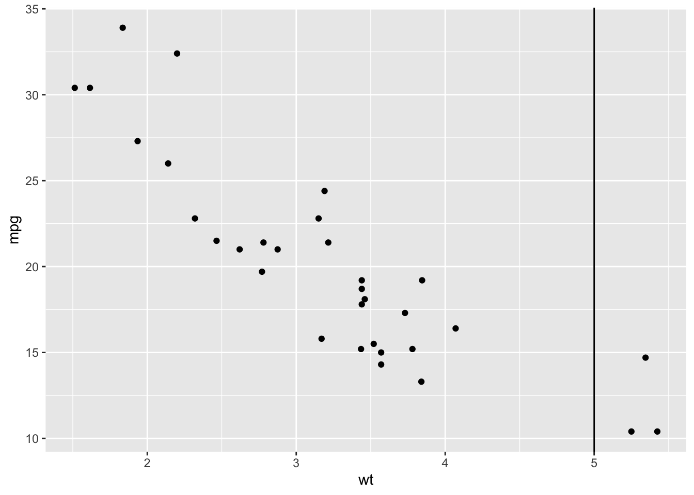
p +
geom_vline(xintercept = 1:5)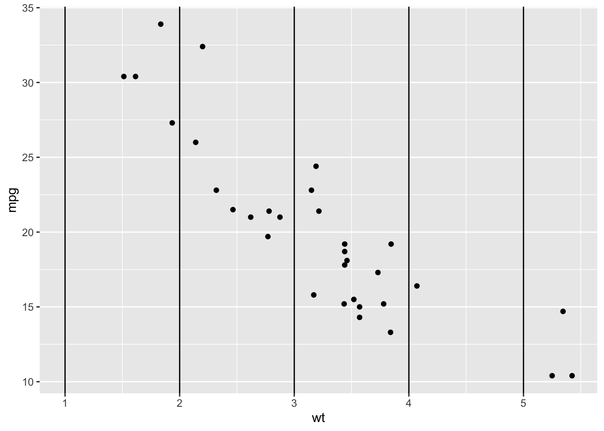
# 添加水平直线
p +
geom_hline(yintercept = 20)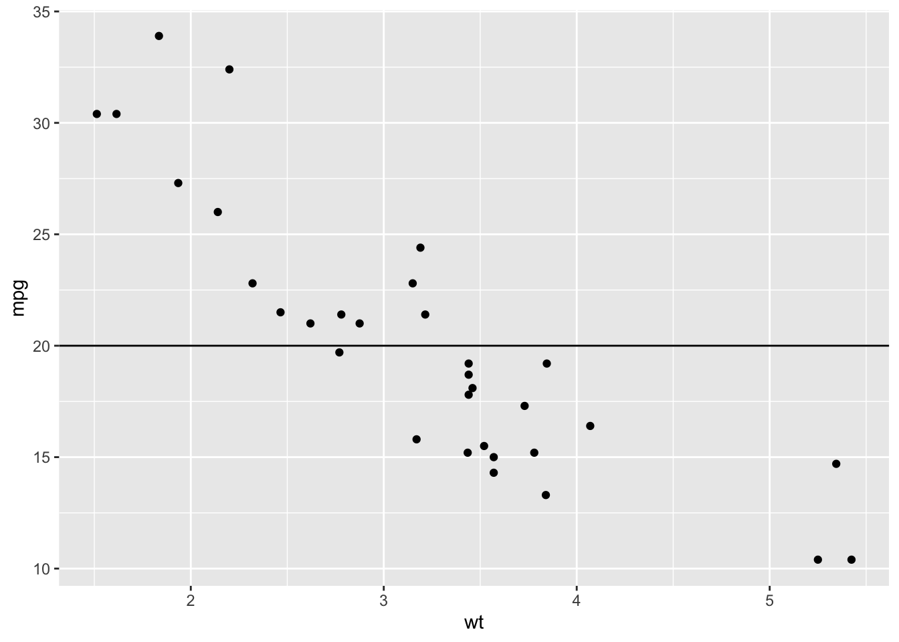
# 添加对角线,默认斜率为1
p +
geom_abline(intercept = 20)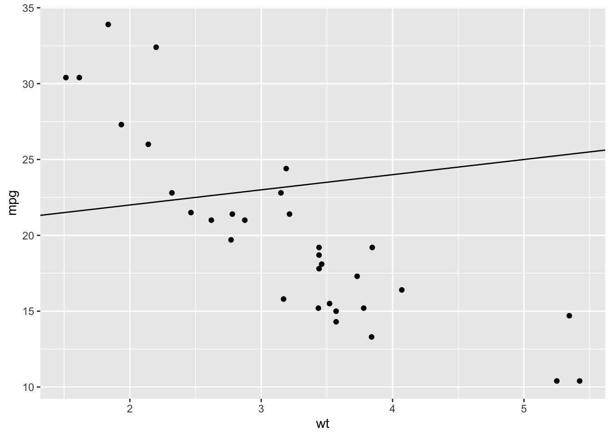
# 计算直线回归的斜率和截距
coef(lm(mpg ~ wt, data = mtcars))## (Intercept) wt
## 37.285126 -5.344472p +
geom_abline(intercept = 37, slope = -5)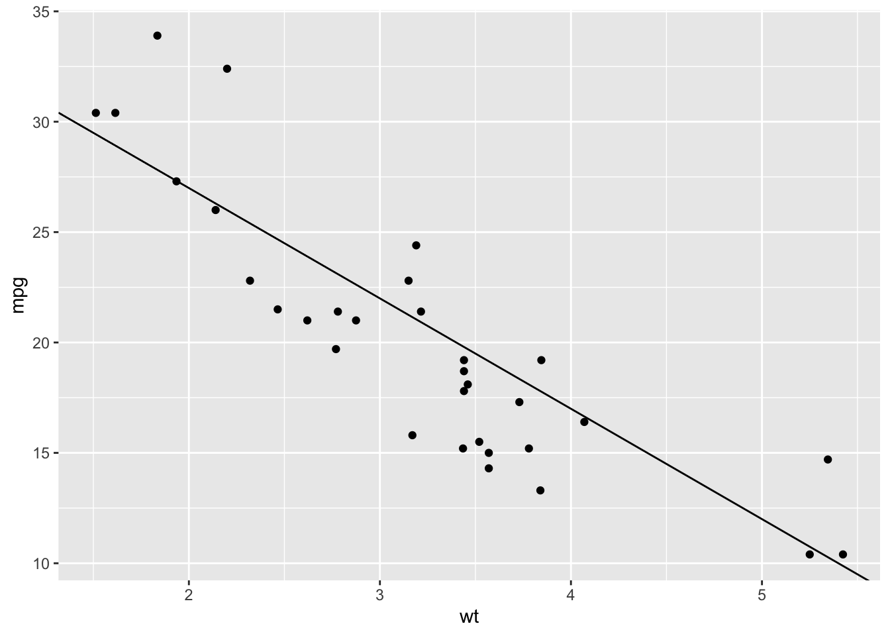
# 但是使用geom_smooth更加简单h:
p +
geom_smooth(method = "lm", se = FALSE)## `geom_smooth()` using formula 'y ~ x'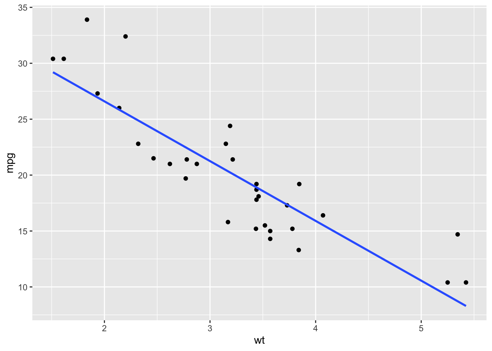
# 如果想要再不同分面显示不同的直线,则使用美学对象,也就是需要自己创建
p <- ggplot(mtcars, aes(mpg, wt)) +
geom_point() +
facet_wrap(~ cyl)
mean_wt <-
data.frame(cyl = c(4, 6, 8), wt = c(2.28, 3.11, 4.00))
mean_wt## cyl wt
## 1 4 2.28
## 2 6 3.11
## 3 8 4.00p +
geom_hline(mapping = aes(x = cyl, yintercept = wt),
data = mean_wt)## Warning: Ignoring unknown aesthetics: x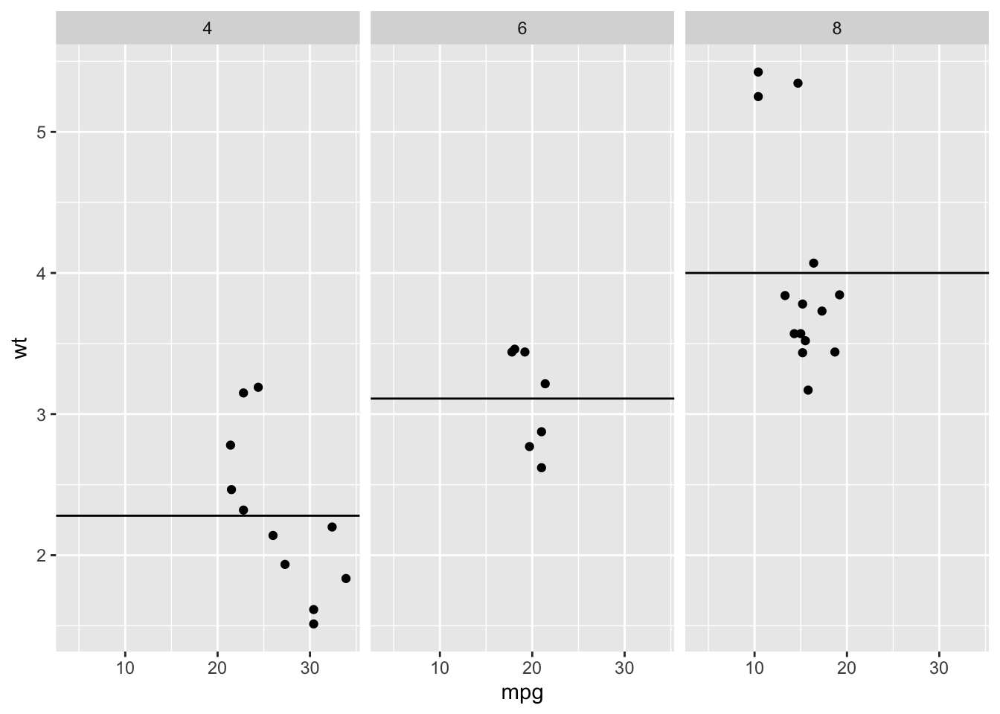
##如果不使用美学对象,则在每一个分面上都是一样的
p +
geom_hline(yintercept = mean_wt$wt)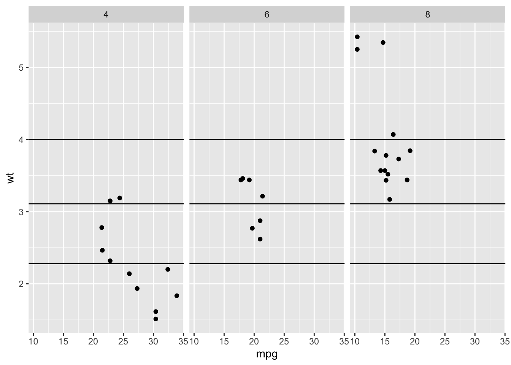
# 控制其他美学对象
ggplot(mtcars, aes(mpg, wt, colour = wt)) +
geom_point() +
geom_hline(aes(yintercept = wt, colour = wt), mean_wt) +
facet_wrap(~ cyl)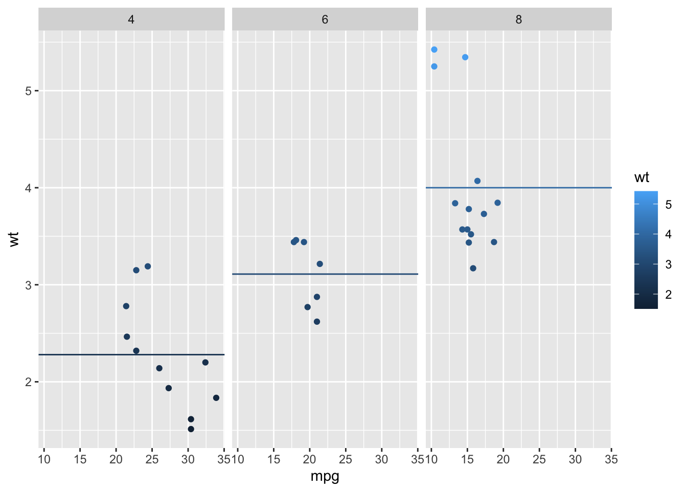
2.2 柱形图(bar charts)geom_bar(),geom_col()和stat_count
一共有两种类型的函数用来绘制柱形图:geom_bar()和geom_col()函数.geom_bar()配对的统计转换函数为stat_count()函数,所以他会自动将每个group的case个数计算出来,然后转为新的data frame,也就是group和数目,然后映射到x和y轴上.而geom_bar()则和R base的bar plot函数相似(默认配对统计转换函数为stat_identify()函数),需要指定x和y轴变量,然后直接将指定的y轴变量映射为bar的高度.
geom_bar(mapping = NULL, data = NULL, stat = "count",
position = "stack", ..., width = NULL, binwidth = NULL,
na.rm = FALSE, show.legend = NA, inherit.aes = TRUE)
geom_col(mapping = NULL, data = NULL, position = "stack", ...,
width = NULL, na.rm = FALSE, show.legend = NA,
inherit.aes = TRUE)
stat_count(mapping = NULL, data = NULL, geom = "bar",
position = "stack", ..., width = NULL, na.rm = FALSE,
show.legend = NA, inherit.aes = TRUE)2.2.1 参数
mapping 美学映射,使用
aes()函数设置.如果设置参数inherit.aes = TRUE(默认),则该图层会从ggplot()函数继承美学映射的参数.data 用于创建该图层的数据.有三种选择: 1)如果设置为
NULL,也是默认设置.则该数据继承自ggplot()函数中的数据.2)一个data.frame,或者其他的对象,如tibble,这将会覆盖ggplot()中的数据.3)也可以是一个function(),但是该function最后返回的对象应该是data.frame.function可以使用formula格式进行创建,如:head(.x, 10)position 位置调整(position adjustment).可以是字符,也可以是使用位置调整参数返回的对象.
… 其他的可以传入
layer()的参数.一般是美学对象,如colour = "red"或者size = 3.也可以是一些一些能够传入到和geom_配对的geom/stat的参数.width 柱形图的宽度. 默认设置为数据“分辨率”的90%(0.9).
na.rm 默认为
FALSE, missing value会被去除掉,但是会给出warning,如果设置为TRUE,missing value也会被去除掉,但是不会给warning.show.legend 该图层是否要显示在legend上.默认为
NA,则该图层中所有的映射到图形属性的变量都会显示在legend中.FALSE则永远不显示,TRUE则永远显示.如果该图形有多个变量映射到不同的图形属性,则可以将其设置为一个vector,分别控制不同的变量是否显示.inherit.aes 如果设置为
FALSE,覆盖掉而不是结合默认美学参数. This is most useful for helper functions that define both data and aesthetics and shouldn’t inherit behaviour from the default plot specification, e.g. borders().不太明白这个意思?geom, stat 覆盖掉默认的
geom_()和stat_()函数.
2.2.2 细节
柱形图使用高度来表示数值.所以一般柱形图是用来进行对比展示的.这也是为什么如果你将数据log之后,使用柱形图就不太合适.
默认,对于同个x轴位置有着多个柱子,则他们会堆积在一起.也就输堆积柱形图,这是由默认的位置调整函数position_stack()实现的.如果你想要让他们并排排列,则需要使用position_dodge()或者position_dodge2()函数.当然,如果你想要堆叠柱形图,而显示的是比例而不是真实数值,则需要使用position_fill()函数.
2.2.3 美学参数(Aesthetics)
geom_bar()可以接受以下美学参数(粗体为必须参数).
x
y
alpha
colour
fill
group
linetype
size
geom_col()可以接受以下美学参数(粗体为必须参数).
x
y
alpha
colour
fill
group
linetype
size
stat_count()可以接受以下美学参数(粗体为必须参数).
x
y
group
weight
2.2.4 计算变量 (Computed variables)
count 每一个grou中的数目
prop 每组的比例
2.2.5 例子
library(ggplot2)
## 首先创建一个ggplot2对象
g <- ggplot(mpg, aes(class))
# 然后使用geom_bar来展示每个class的case的数目
g + geom_bar()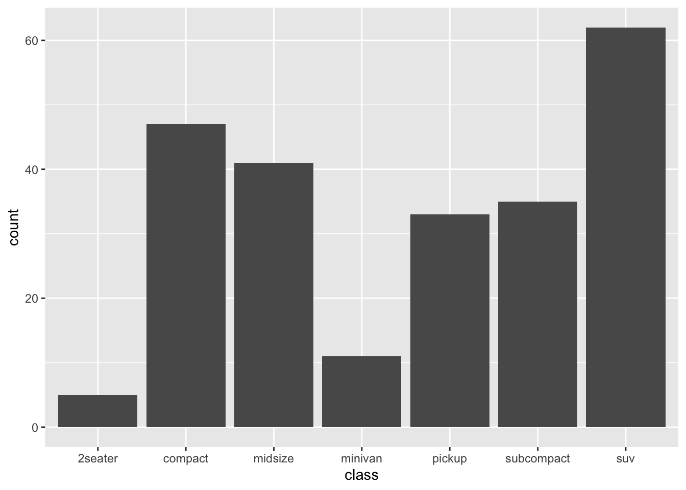
# 可以通过设置weight参数,将每个柱子的高度改为该变量的和
g + geom_bar(aes(weight = displ))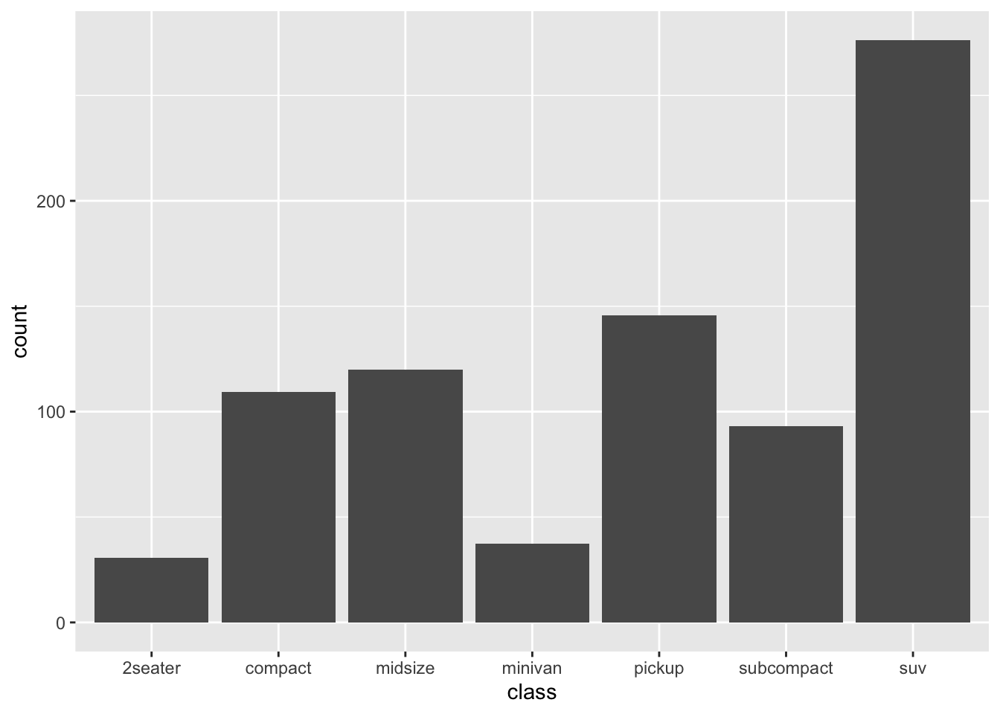
# 当每一个柱子又可以分为不同的group时,默认是堆积在一起的.
g + geom_bar(aes(fill = drv))
# 如果想要翻转类别的顺序,可以在position参数中设置
g +
geom_bar(aes(fill = drv),
position = position_stack(reverse = TRUE)) +
coord_flip() +
theme(legend.position = "top")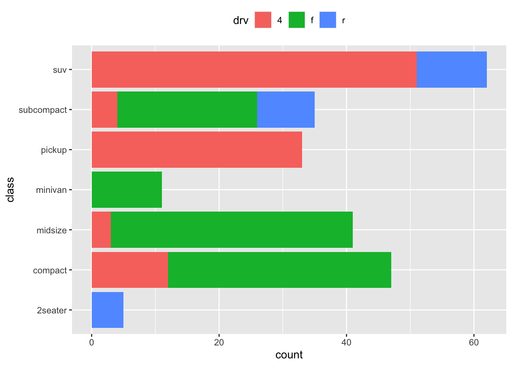
# 如果只是想要柱子高度显示某个变量的值,使用geom_col函数
df <- data.frame(trt = c("a", "b", "c"), outcome = c(2.3, 1.9, 3.2))
ggplot(df, aes(trt, outcome)) +
geom_col()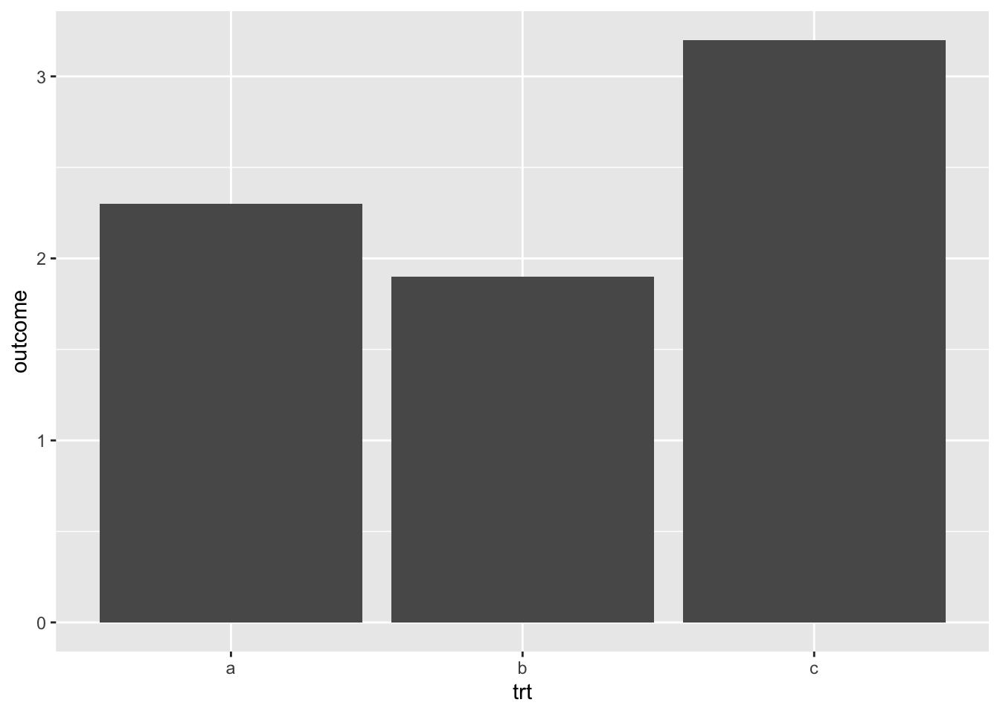
# 当然,geom_bar函数也可以用来显示连续性的变量
df <- data.frame(x = rep(c(2.9, 3.1, 4.5), c(5, 10, 4)))
ggplot(df, aes(x)) + geom_bar()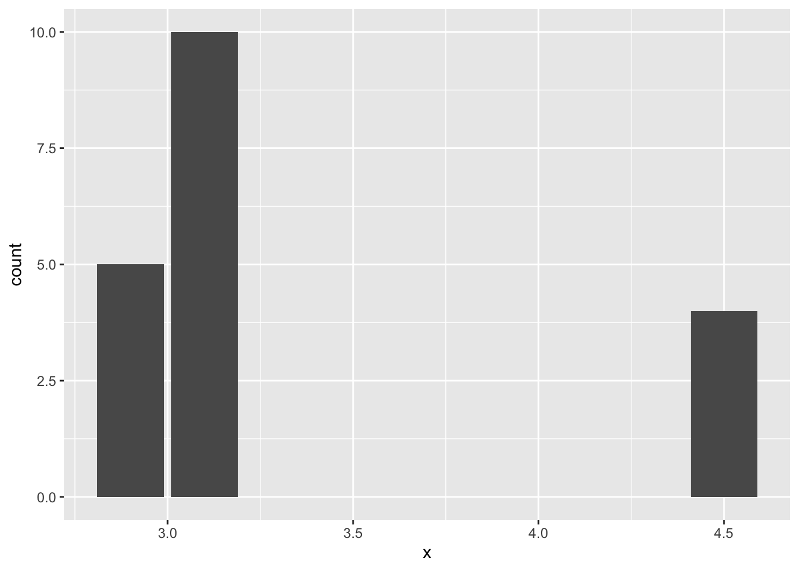
# cf. a histogram of the same data
ggplot(df, aes(x)) + geom_histogram(binwidth = 0.5)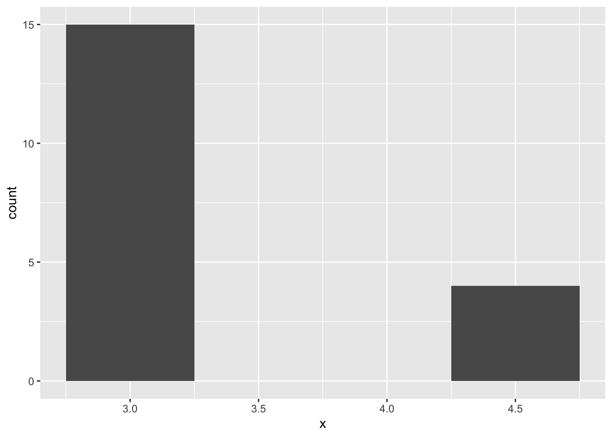
2.3 二维方格计数热图(Heatmap of 2d bin counts)geom_bin2d()和stat_bin_2d()
将平面划分为放个,然后计算每个方格中case的数目,然后将小方格内的case的数目映射到小方格的填充颜色上(默认).这种作图方法与geom_point()相比,好处是可以有效的避免重叠.
geom_bin2d(mapping = NULL, data = NULL, stat = "bin2d",
position = "identity", ..., na.rm = FALSE, show.legend = NA,
inherit.aes = TRUE)
stat_bin_2d(mapping = NULL, data = NULL, geom = "tile",
position = "identity", ..., bins = 30, binwidth = NULL,
drop = TRUE, na.rm = FALSE, show.legend = NA, inherit.aes = TRUE)2.3.1 参数
mapping 美学映射参数,使用
aes()建立.如果在该图层进行设置,并且inherit.aes = TRUE(默认), it is combined with the default mapping at the top level of the plot. You must supply mapping if there is no plot mapping?data 用于创建该图层的数据.有三种选择: 1)如果设置为
NULL,也是默认设置.则该数据继承自ggplot()函数中的数据.2)一个data.frame,或者其他的对象,如tibble,这将会覆盖ggplot()中的数据.3)也可以是一个function(),但是该function最后返回的对象应该是data.frame.function可以使用formula格式进行创建,如:head(.x, 10)position 位置调整(position adjustment).可以是字符,也可以是使用位置调整参数返回的对象.
… 其他的可以传入
layer()的参数.一般是美学对象,如colour = "red"或者size = 3.也可以是一些一些能够传入到和geom_配对的geom/stat的参数.na.rm 默认为
FALSE, missing value会被去除掉,但是会给出warning,如果设置为TRUE,missing value也会被去除掉,但是不会给warning.show.legend 该图层是否要显示在legend上.默认为
NA,则该图层中所有的映射到图形属性的变量都会显示在legend中.FALSE则永远不显示,TRUE则永远显示.如果该图形有多个变量映射到不同的图形属性,则可以将其设置为一个vector,分别控制不同的变量是否显示.inherit.aes 如果设置为
FALSE,覆盖掉而不是结合默认美学参数. This is most useful for helper functions that define both data and aesthetics and shouldn’t inherit behaviour from the default plot specification, e.g. borders().不太明白这个意思?geom, stat 覆盖掉默认的
geom_()和stat_()函数.bins 数值型的向量,用来分别设置垂直和水平方向上的bin的数目,默认都是30.
binwidth 数值型向量,用于设置在垂直和水平方向上的bin的宽度.如果该参数设置,则会覆盖掉bins参数.
drop 如果设置为
TRUE,则会去除掉count为0的方格.
2.3.2 美学参数(Asethetics)
stat_bind2d()接受以下美学参数(黑体为必须参数):
x
y
fill
*group
2.3.3 计算变量(Computed variables)
count bin中的数据点的个数.
density bin中数据点的密度(density),整体数据点数目为1,所有其他bin内数据点数目与之scale.
ncount count, scaled to maximum of 1?
ndensity density, scaled to maximum of 1
2.3.4 例子
library(ggplot2)
d <- ggplot(diamonds, aes(x, y)) +
xlim(4, 10) +
ylim(4, 10)
d + geom_bin2d()## Warning: Removed 478 rows containing non-finite values (stat_bin2d).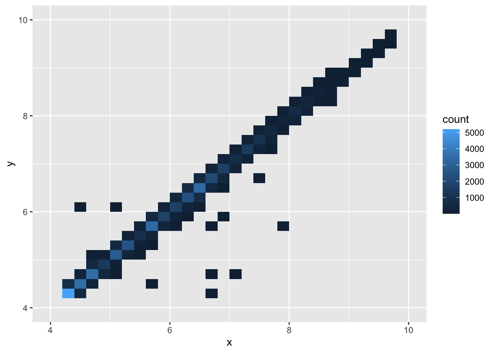
2.4 空白图geom_blank()
geom_blank()函数不绘制任何东西,但是可以用来绘制一个空的plot来保持一定的刻度.
geom_blank(mapping = NULL, data = NULL, stat = "identity",
position = "identity", ..., show.legend = NA, inherit.aes = TRUE)2.4.1 参数
所有参数可以参考上面所有的函数.
2.4.2 例子
p <-
ggplot(mtcars, aes(wt, mpg))
p
p +
geom_blank()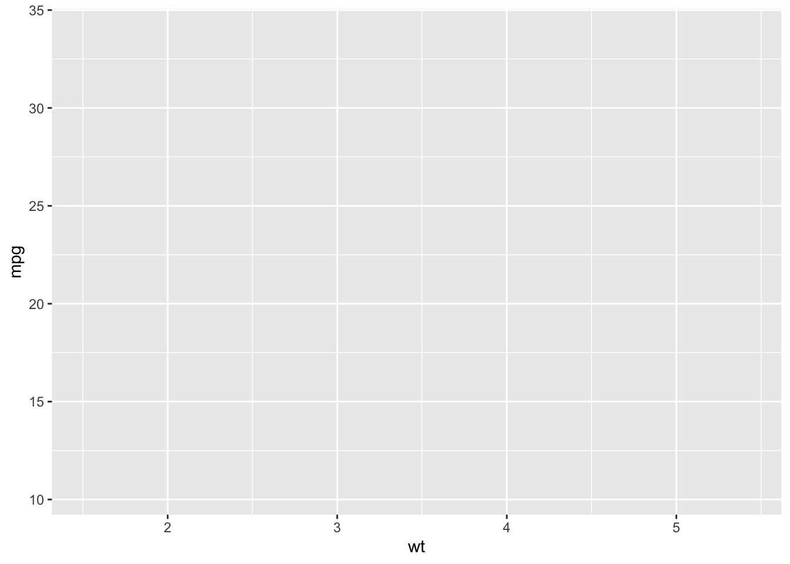
2.5 箱型图(boxplot或者whiskers plot)geom_boxplot()和stat_boxplot()
箱型图用来展示连续性变量的分布.它可以展示5个统计量(中位值,two hinges and two whiskers), 以及所有的outlier值.
geom_boxplot(mapping = NULL, data = NULL, stat = "boxplot",
position = "dodge2", ..., outlier.colour = NULL,
outlier.color = NULL, outlier.fill = NULL, outlier.shape = 19,
outlier.size = 1.5, outlier.stroke = 0.5, outlier.alpha = NULL,
notch = FALSE, notchwidth = 0.5, varwidth = FALSE, na.rm = FALSE,
show.legend = NA, inherit.aes = TRUE)
stat_boxplot(mapping = NULL, data = NULL, geom = "boxplot",
position = "dodge2", ..., coef = 1.5, na.rm = FALSE,
show.legend = NA, inherit.aes = TRUE)2.5.1 参数
mapping,data,position和…参数可以参考前面的参数.都是一致的.
outlier.colour,outlier.fill,outlier.shape,outlier.size,outlier.stroke,outlier.alpha:离群点的美学参数.如果想要隐藏outlier,则可以将outlier.shape设置为NA.
notch:默认为
FALSE,一个标准的box plot,如果设置为TRUE,则是一个有缺口的box plot.有缺口的box plot可以方便多组数据进行比较.因为缺口处就是中位值所在位置.notchwidth:缺口box plot的缺口处的宽度和整体宽度的比值,默认为0.5.
varwidth:默认为
FALSE,一个标准的box plot.如果设置为TRUE,则每组的box的宽度和该组的变量的个数的平方根成正比.coef:默认为1.5.也就是上下边框扩展出的上下晶须的距离为1.5倍的IQR.
2.5.2 统计总结
box plot框的上下边界(hinge)分别代表第一和第三分位数.
从框上边界扩展出的上晶须(whisker)的距离为1.5倍的IQR(IQR为inter quartile range,也就是第三分位数和第一份位数之差).从框下边界扩展出的下晶须(whisker)的距离为1.5倍的IQR.在上下晶须范围以外的,就是outlier.
2.5.3 美学参数
geom_boxplot()接收以下美学参数(黑体为必须参数):
x
lower
upper
umiddle
ymin
yax
alpha
colour
fill
group
linetype
shape
size
weight
2.5.4 计算变量
- width box plot宽度.
ymin:下晶须==下框边界-1.5*IQR
lower:下框边界.默认为25% quantile.
notchlower:对于有缺口box plot的下框边界.默认为median - 1.58 * IQR / sqrt(n)
middle:中位值,默认为50%分位数.
notchupper:对于有缺口box plot的上框边界.默认为median + 1.58 * IQR / sqrt(n)
upper:上框边界,默认为75%分位数.
ymax上晶须==上框边界+1.5*IQR
2.5.5 例子
library(ggplot2)
p <- ggplot(mpg, aes(class, hwy))
p +
geom_boxplot() 
# 交换x轴和y轴
p + geom_boxplot() +
coord_flip()
# 有缺口的box plot,注意此时上下晶须距离是有变化的.
p +
geom_boxplot(notch = TRUE)## notch went outside hinges. Try setting notch=FALSE.
## notch went outside hinges. Try setting notch=FALSE.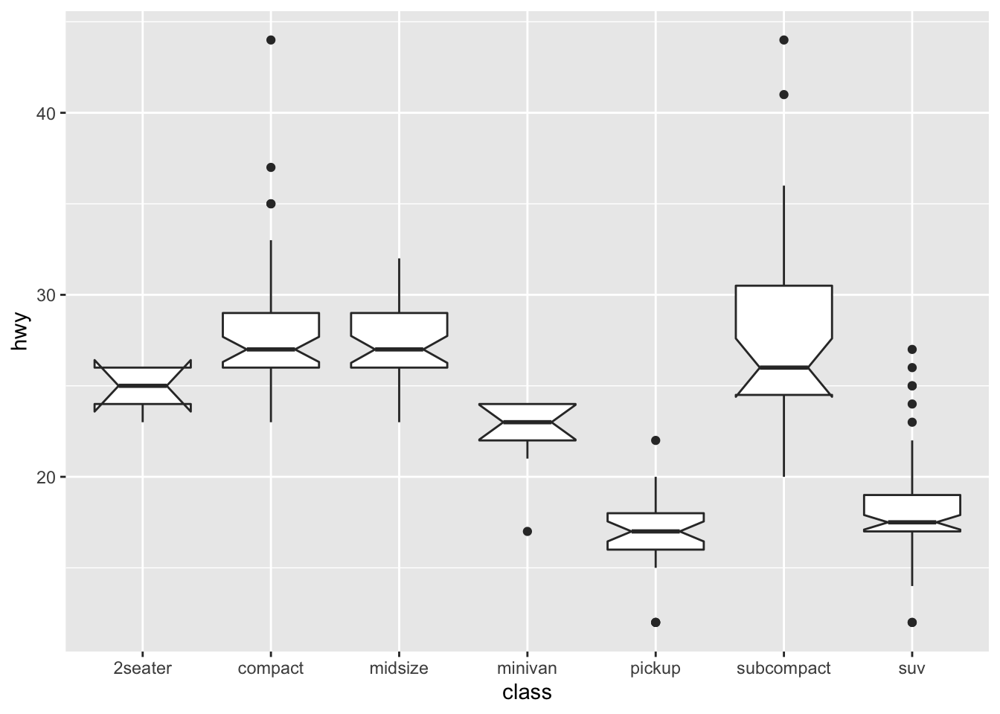
# box宽度和每组数目n的平方根成正比
p + geom_boxplot(varwidth = TRUE)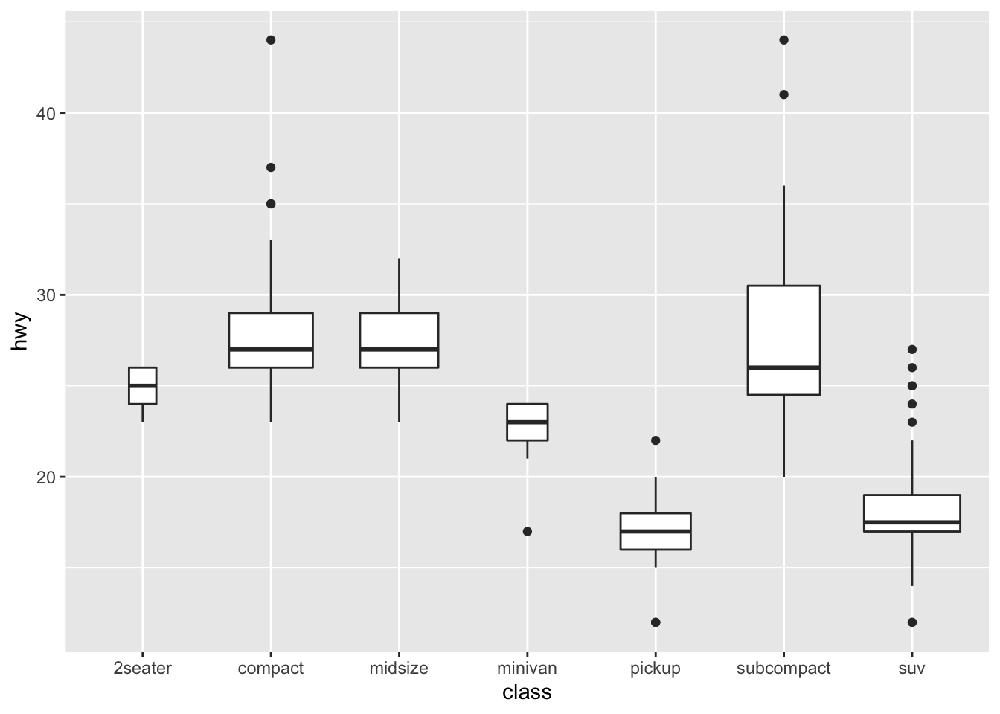
p + geom_boxplot(fill = "white", colour = "#3366FF")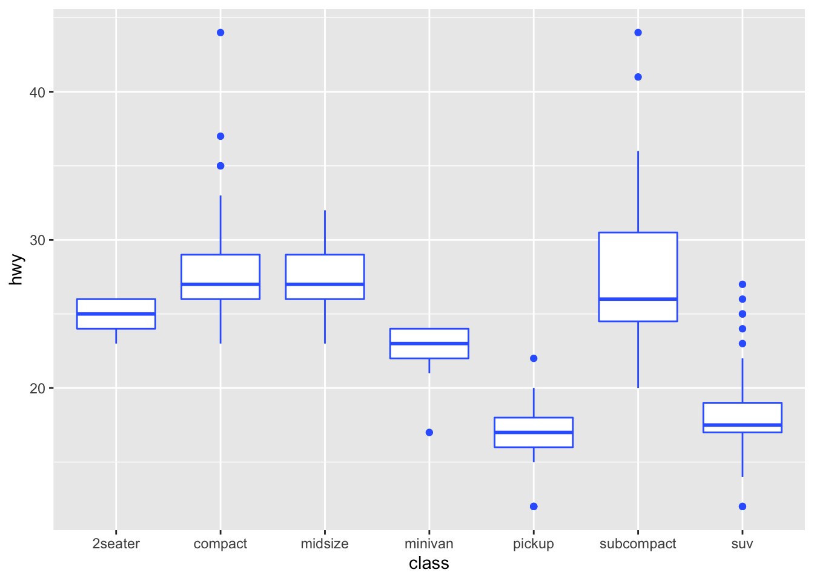
# 设置outlier的美学参数
p + geom_boxplot(outlier.colour = "red", outlier.shape = 1)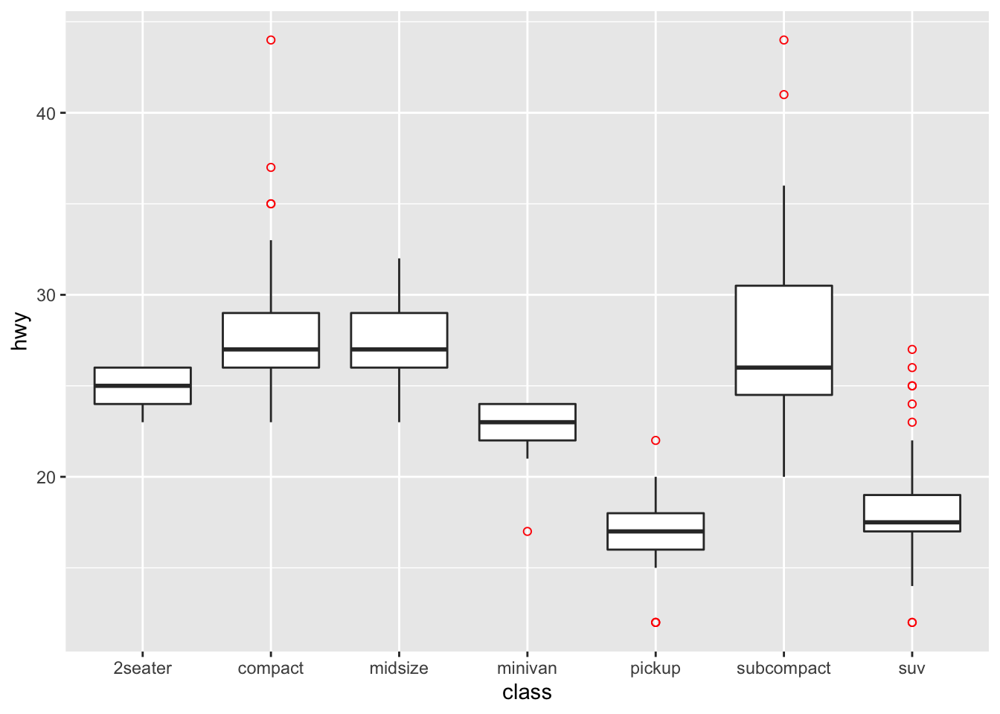
# 将点和boxplot画在一起,这时候需要把outlier去除掉,因为和原始点会有重叠
p + geom_boxplot(outlier.shape = NA) +
geom_jitter(width = 0.2)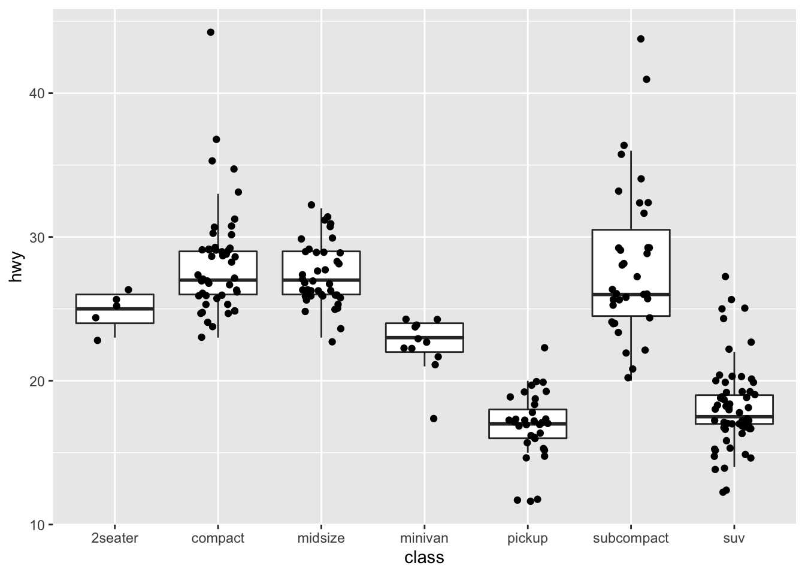
# 如果每组的box plot再分类,则默认是并列排在一起的
p + geom_boxplot(aes(colour = drv))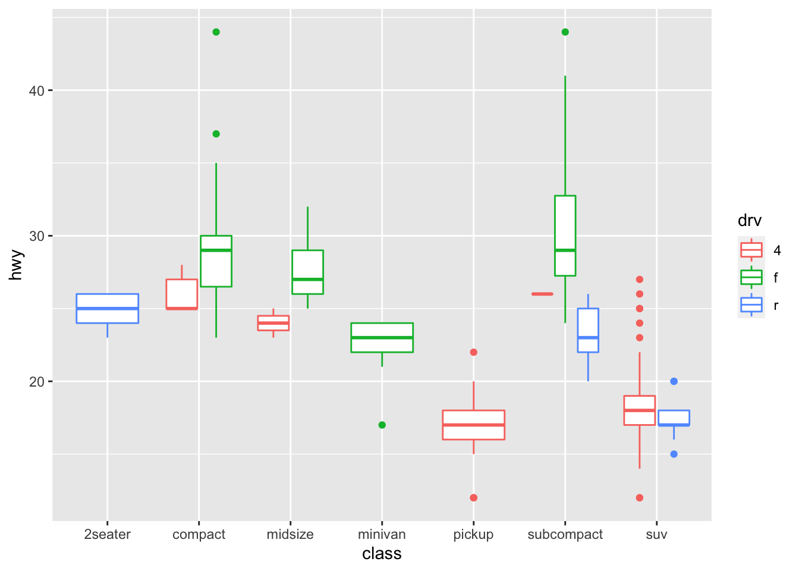
# x轴不是分类数据,而是连续数据也是可以的.但是需要提供如何对x轴进行分类,比如通过
#cut_width函数将连续性变量进行分类
ggplot(diamonds, aes(x = carat, y = price)) +
geom_boxplot()## Warning: Continuous x aesthetic -- did you forget aes(group=...)?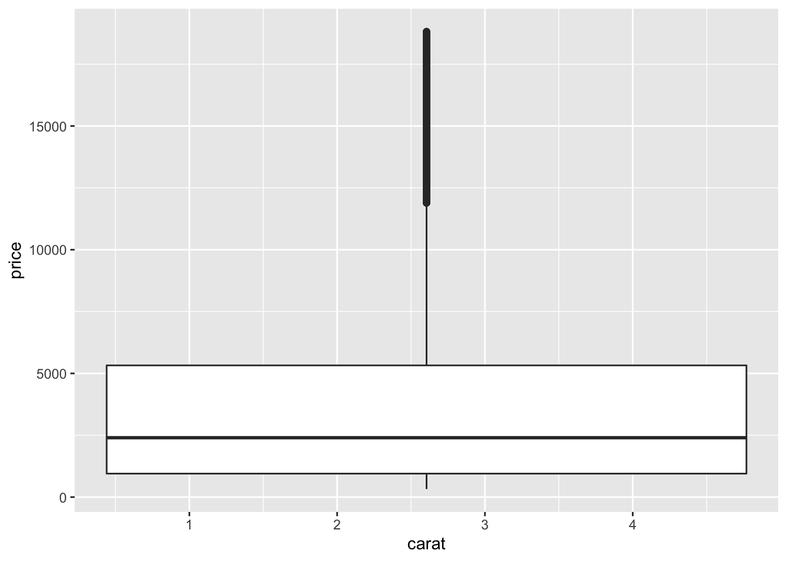
ggplot(diamonds, aes(carat, price)) +
geom_boxplot(aes(colour = cut_width(carat, 0.25)), show.legend = FALSE)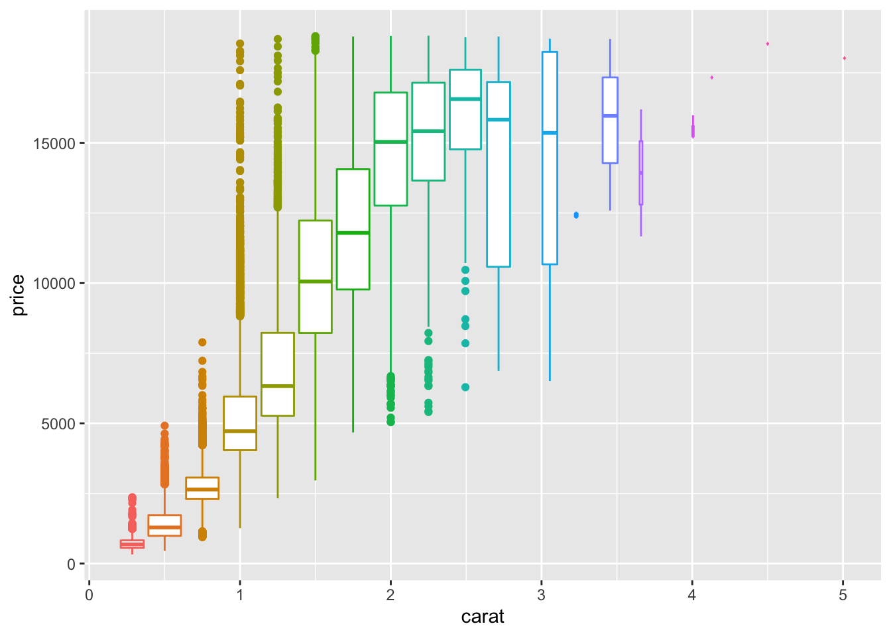
ggplot(diamonds, aes(carat, price)) +
geom_boxplot(aes(group = cut_width(carat, 0.25)), show.legend = FALSE)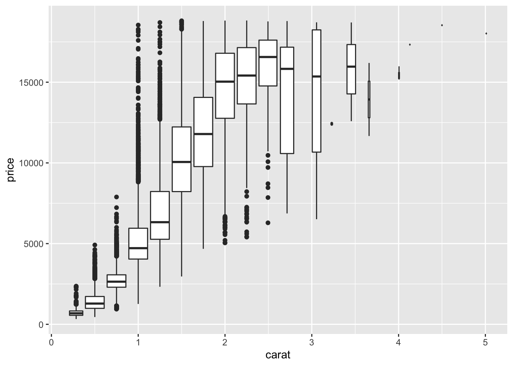
# 如果你自己定义了boxplot的各个元素,也可以通过设置stat=`identify`来画boxplot
y <- rnorm(100)
df <- data.frame(
x = 1,
y0 = min(y),
y25 = quantile(y, 0.25),
y50 = median(y),
y75 = quantile(y, 0.75),
y100 = max(y)
)
ggplot(df, aes(x)) +
geom_boxplot(
aes(ymin = y0, lower = y25, middle = y50, upper = y75, ymax = y100),
stat = "identity"
)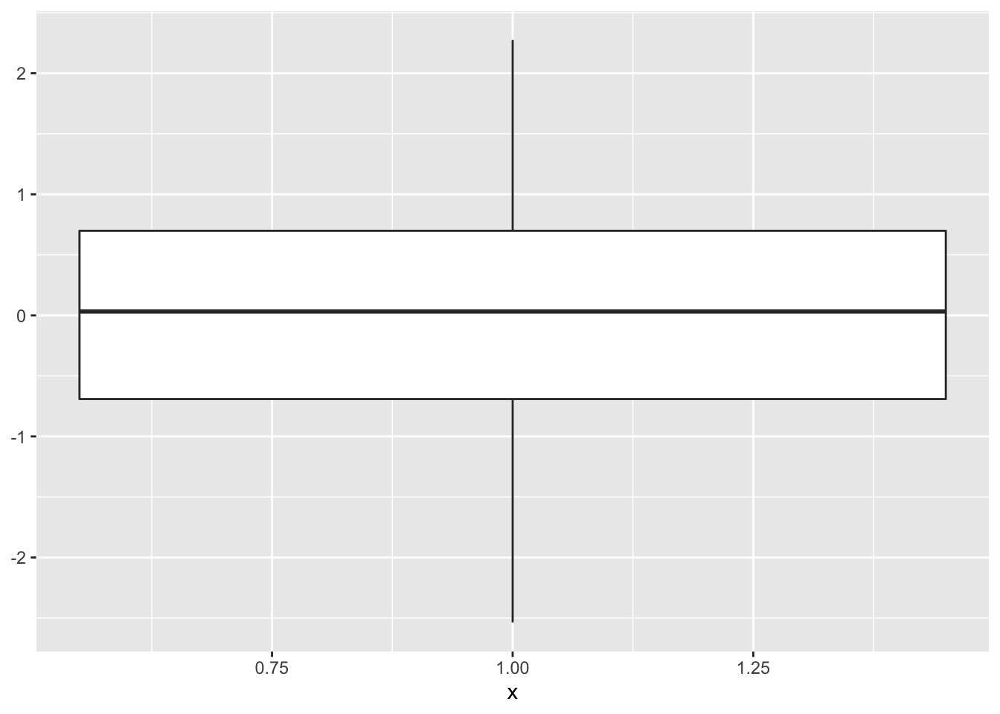
2.6 3D表面的2D等高线(contours)geom_contour()和stat_contour()
ggplot2并不能画3D图形,但是可以使用geom_contour()和geom_tile()(tile是瓷砖的意思)画等高线. To be a valid surface, the data must contain only a single row for each unique combination of the variables mapped to the x and y aesthetics. Contouring tends to work best when x and y form a (roughly) evenly spaced grid. If your data is not evenly spaced, you may want to interpolate to a grid before visualising.
geom_contour(mapping = NULL, data = NULL, stat = "contour",
position = "identity", ..., lineend = "butt", linejoin = "round",
linemitre = 10, na.rm = FALSE, show.legend = NA,
inherit.aes = TRUE)
stat_contour(mapping = NULL, data = NULL, geom = "contour",
position = "identity", ..., na.rm = FALSE, show.legend = NA,
inherit.aes = TRUE)2.6.1 参数
很多参数跟前面是一样的.其他不同的见下:
lineend 线条末端的形式(round, butt, square)
linejoin 线条交界处的形式(round, butt, square)
linemitre Line mitre limit (number greater than 1).
2.6.2 美学参数
geom_contour()接受以下参数(黑体为必须参数):
x
y
alpha
colour
group
linetype
size
weight
stat_contour()接受以下参数(黑体为必须参数):
x
y
z
group
order
2.6.3 计算变量
level:等高线的高度
nlevel:等高线的高度,最大值scale到1.
piece:contour piece (整数).
2.6.4 例子
# 基础图形
library(ggplot2)
## 先看看数据
head(faithfuld)## # A tibble: 6 x 3
## eruptions waiting density
## <dbl> <dbl> <dbl>
## 1 1.6 43 0.00322
## 2 1.65 43 0.00384
## 3 1.69 43 0.00444
## 4 1.74 43 0.00498
## 5 1.79 43 0.00542
## 6 1.84 43 0.00574v <- ggplot(faithfuld, aes(waiting, eruptions, z = density))
v + geom_contour()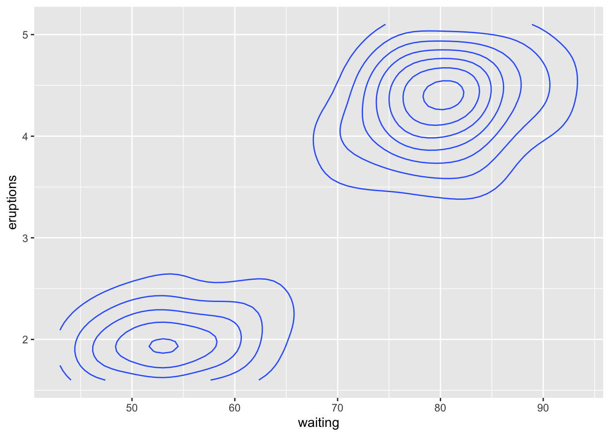
# 也可以通过设置参数bins,来确定有几个等高线.
v + geom_contour(bins = 2)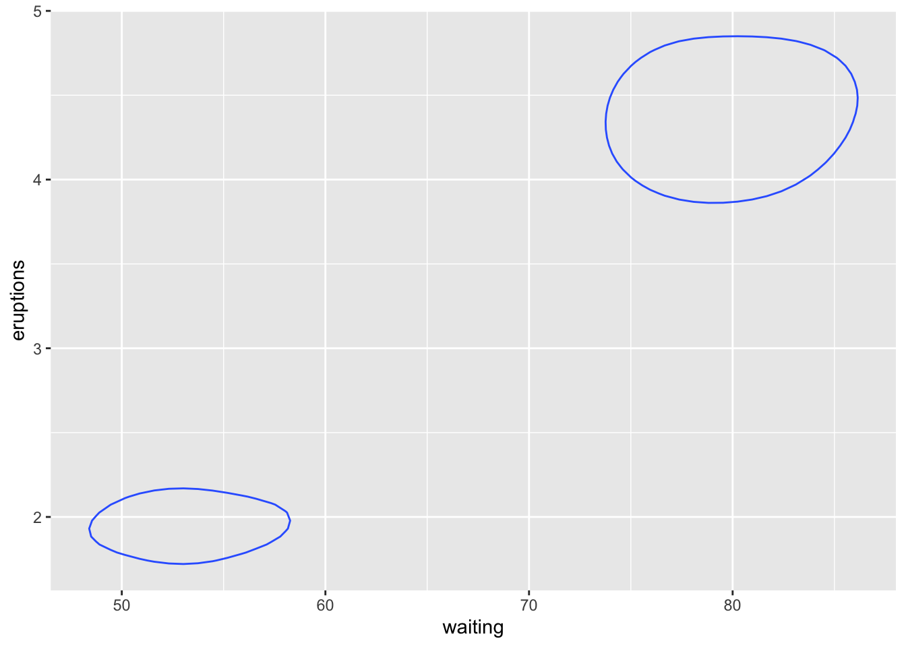
v + geom_contour(bins = 10)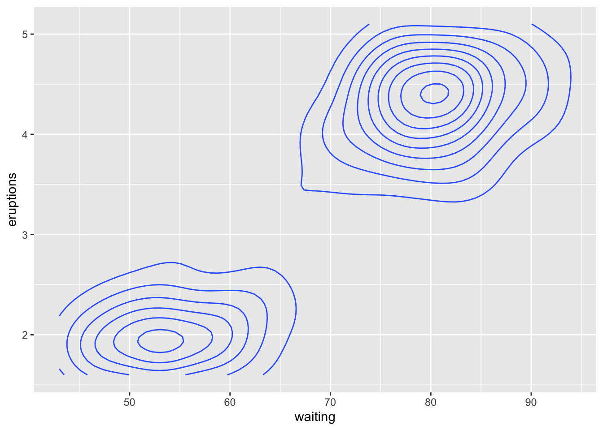
# 当然,也可以设置等高线之间的距离
v + geom_contour(binwidth = 0.01)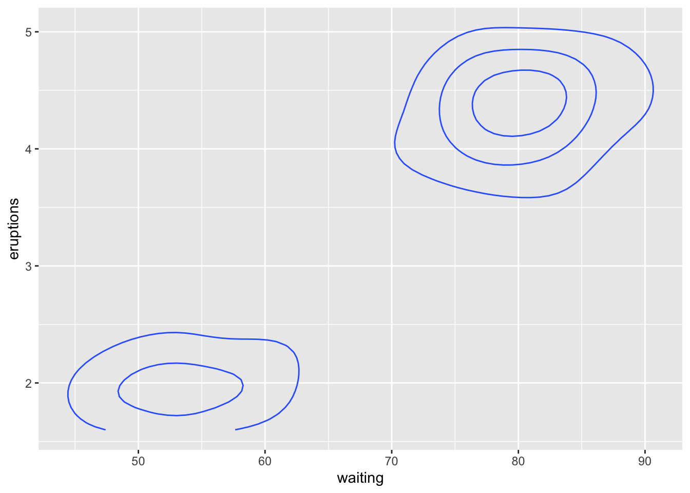
v + geom_contour(binwidth = 0.001)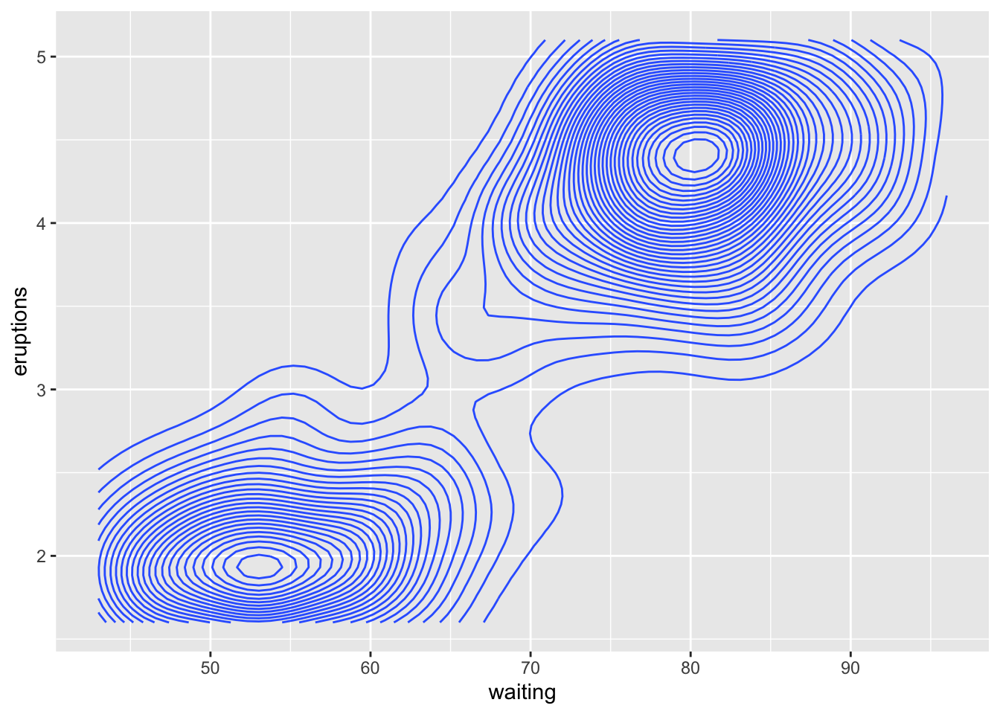
# 其他的参数
##level就是stat_contour的其中一个计算变量,level.
v + geom_contour(aes(colour = ..level..))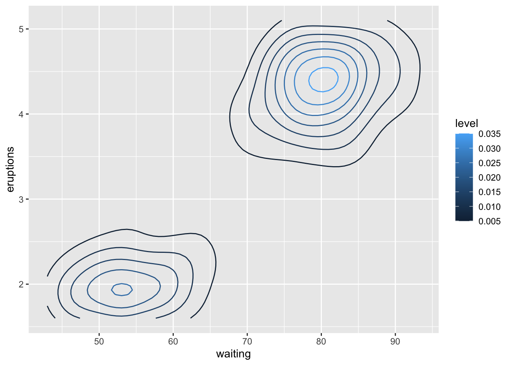
##下面与上面相同.
v + geom_contour(aes(colour = stat(level)))
v + geom_contour(colour = "red")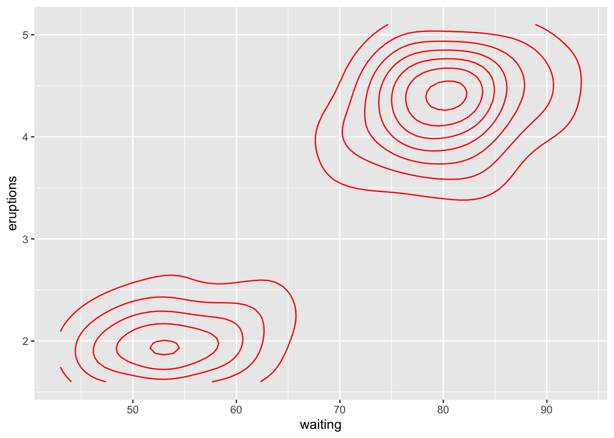
# geom_rect用来画矩形
v + geom_raster(aes(fill = density)) +
geom_contour(colour = "white")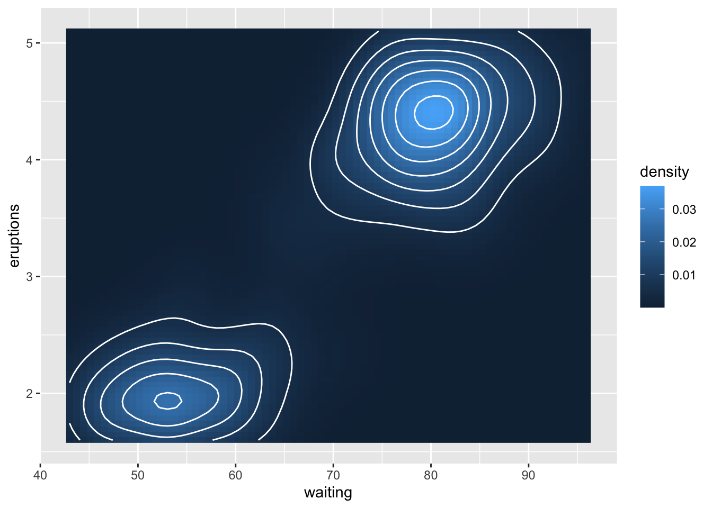
v + geom_raster(aes(fill = density)) +
scale_fill_gradient(low = "white", high = "red") +
geom_contour(colour = "white")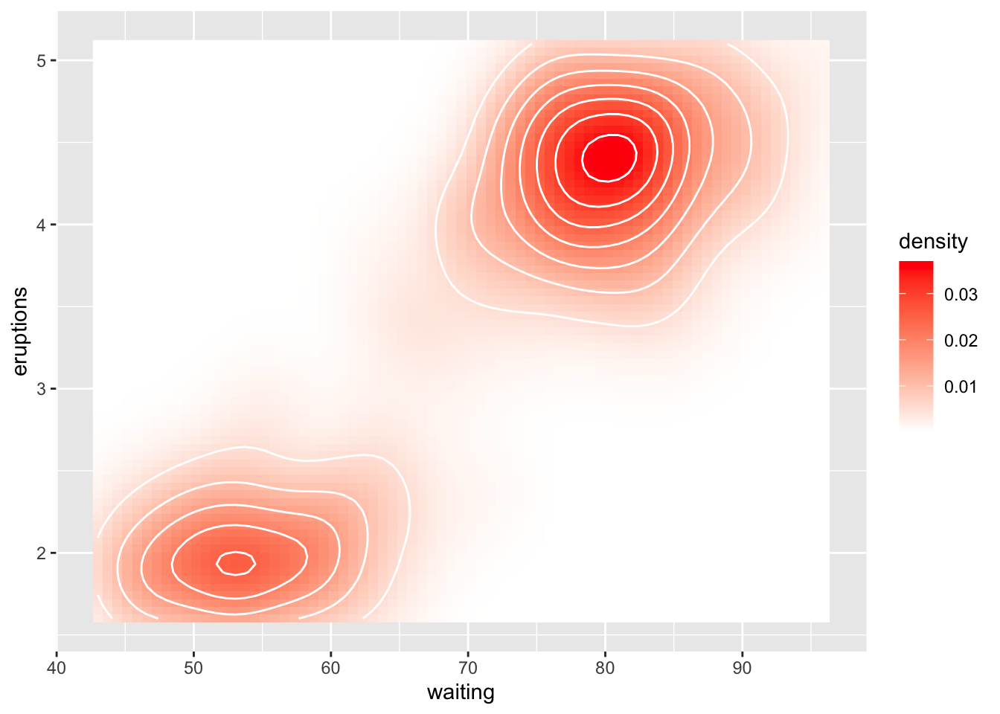
3 常见问题总结
3.1 如何保证不同图中legend的scale一致
比如两个图中,我们想保证legend对应的size的粗细是和数据一致的.
library(ggplot2)
library(tidyverse)
data.frame(x = 1:5, y = 1:5) %>%
ggplot() +
geom_point(aes(x = x, y = y, size = x))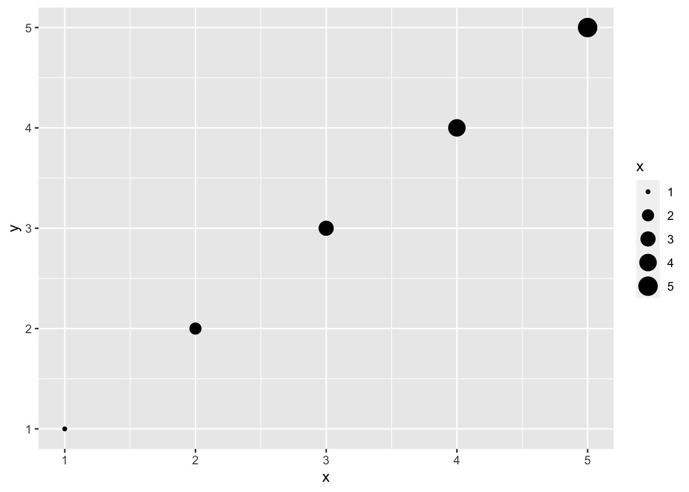
使用scale_size_...()函数来进行设置.
data.frame(x = 1:5, y = 1:5) %>%
ggplot() +
geom_point(aes(x = x, y = y, size = x)) +
scale_size_continuous(limits = c(1,5), range = c(1,5))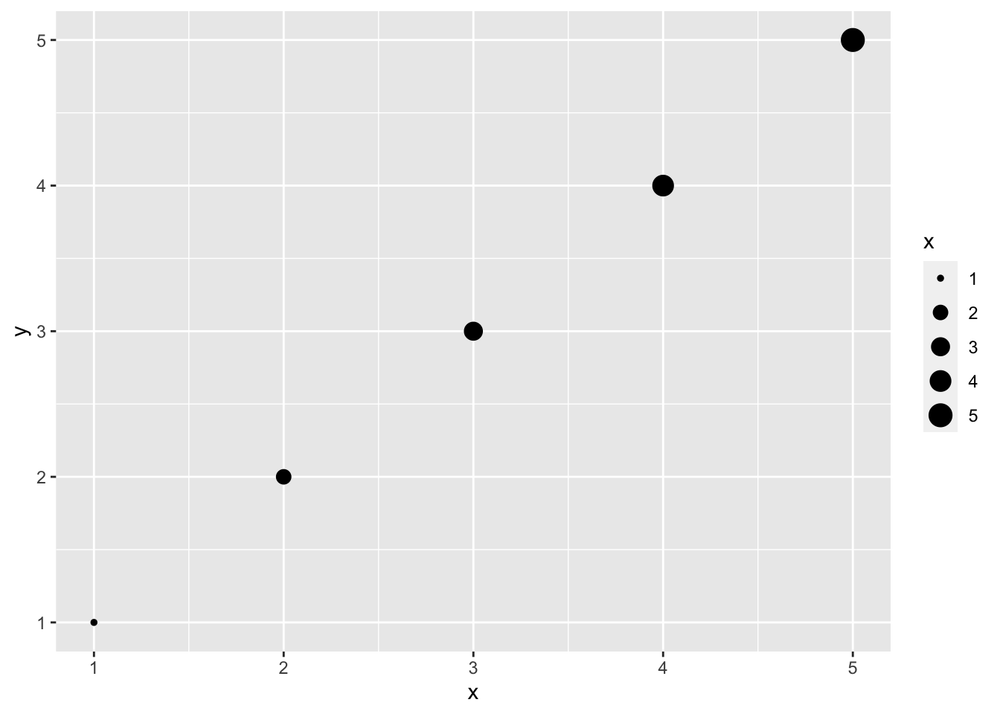
data.frame(x = 1:5, y = 1:5) %>%
ggplot() +
geom_point(aes(x = x, y = y, size = x)) +
scale_size_continuous(limits = c(1,5), range = c(5,6))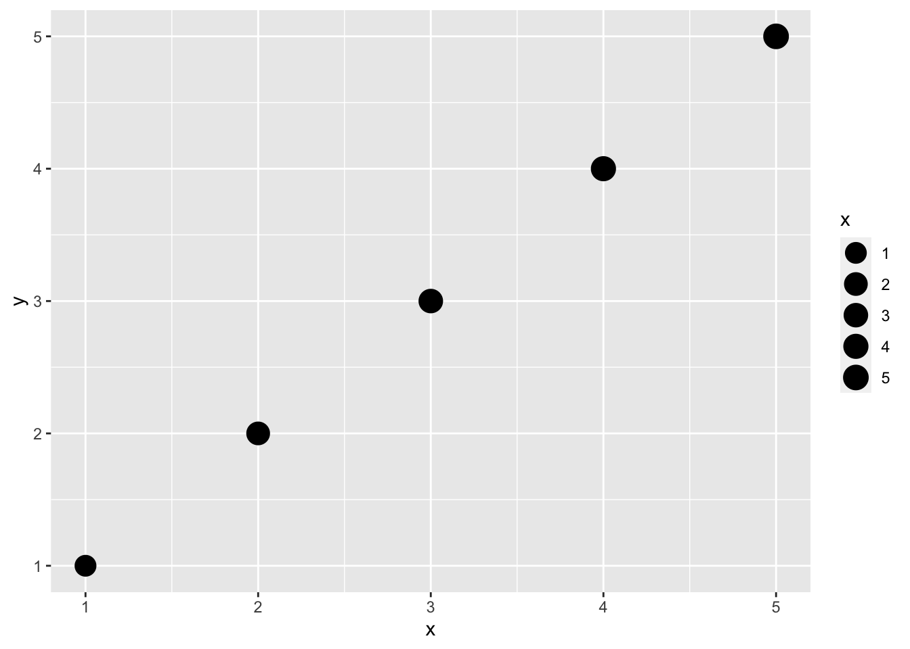
其中参数limits是一个两个的数值vector,用来设置是指的最小和最大值.而参数range也是一个两个数值的vector,用来设置point的size的最小值和最大值.
Xiaotao Shen
Postdoctoral Research Fellow
Metabolomics, Multi-omics, Bioinformatics, Systems Biology.